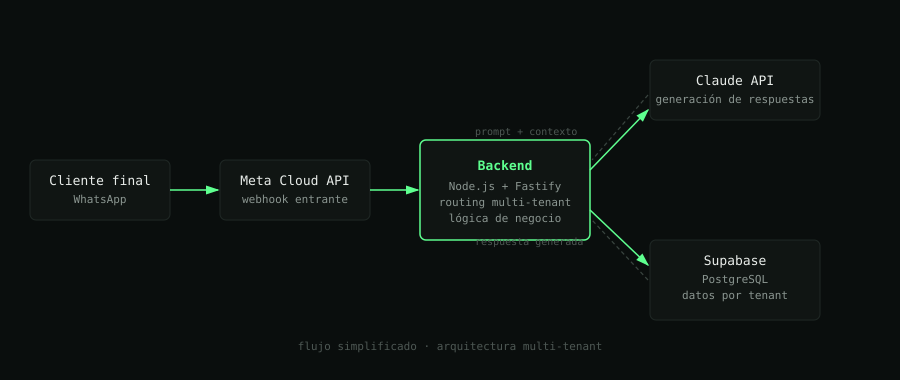

$ whoami
Avnish Jassal_
Full-stack Developer/Barcelona/Co-founder @ JJ Systems
Construyo productos de principio a fin: backend, frontend, infraestructura y, últimamente, IA aplicada a procesos de negocio reales.
stack
HTML
CSS
JavaScript
TypeScript
Node.js
React
React Native
Fastify
Supabase / PostgreSQL
PHP
WordPress / WooCommerce
Claude API
Meta Cloud API
proyectos
JJ Systems
en producción
SaaS de chatbots de WhatsApp con IA, co-fundado con un socio. Arquitectura completa diseñada y construida por mí: backend multi-tenant, integración con la API de Claude (Anthropic) y la Meta Cloud API para automatizar conversaciones de negocio en tiempo real.

Nou Barris App
en desarrollo · próx. Google Play
App de participación ciudadana para el barrio de Nou Barris (Barcelona), cofinanciada por la Unión Europea en colaboración con Educo. Incluye filtros por categoría, módulo de testimonios, contenido educativo y registro emocional. Migré el backend y la base de datos en producción más de una vez al detectar mejores soluciones de infraestructura.


// también he trabajado con Shopify en un proyecto e-commerce anterior — experiencia previa en montaje de tiendas online.
experiencia
2023 — 2026
Full-stack Developer
Tropezando con Suerte (Personna)
Casi 3 años de desarrollo full-stack en producción. Diseñé y construí desde cero una intranet de gestión integral para la entidad: registro y gestión de familias y niños, inscripciones a casales y actividades, y un área de usuario privada donde cada familia podía subir y consultar sus propios datos sensibles. Stack basado en JavaScript, PHP y WordPress, con foco en seguridad de datos personales y facilidad de uso para usuarios no técnicos.
2025 — actual
Co-fundador
JJ Systems
Diseño y desarrollo de la arquitectura técnica completa: backend multi-tenant, integración con la API de Claude para automatizar conversaciones de WhatsApp, sistema de gestión de clientes y despliegue del producto en producción. Responsable también del roadmap técnico y de las decisiones de stack (Node.js, TypeScript, Fastify, Supabase).
actual
Ing. Informática
TecnoCampus — Universitat Pompeu Fabra
Programa InnoEmprèn (accelerador de proyectos emprendedores).